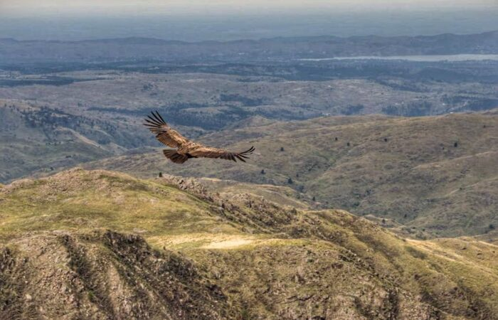
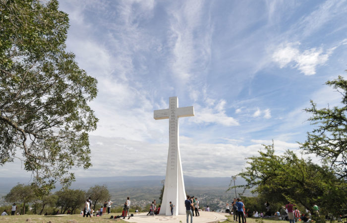
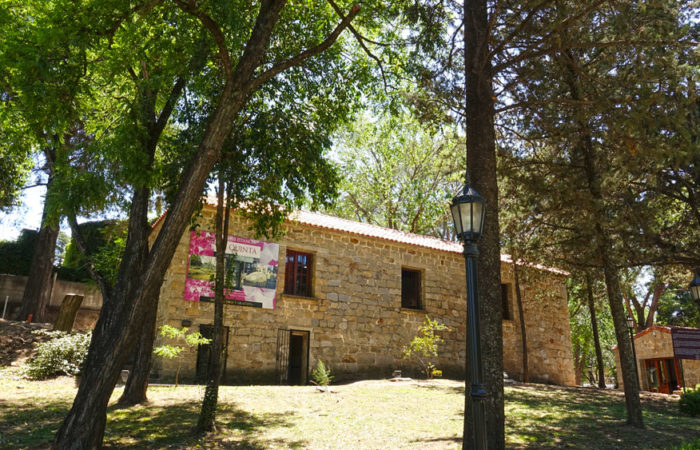
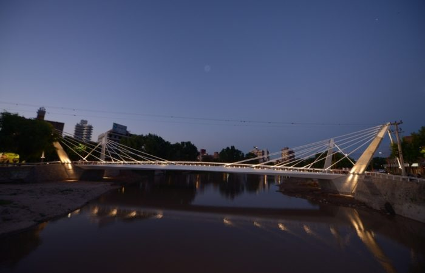
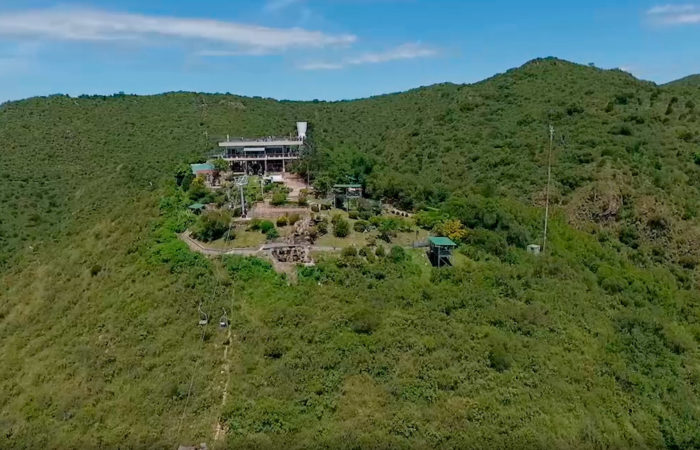
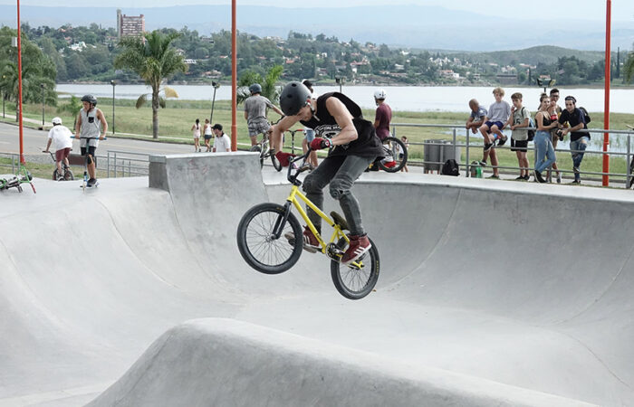
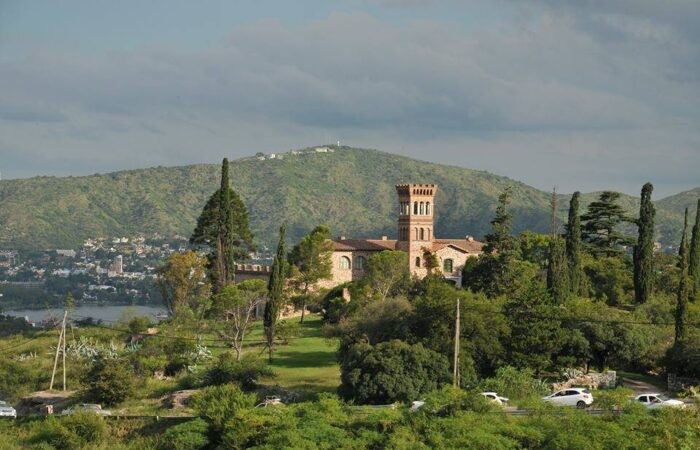

El Reloj Cu Cú es uno de los emblemas turísticos de la ciudad. Fue construido por un grupo de ingenieros alemanes que vivía en la ciudad. Se inauguró el 25 de mayo de 1958, y en esa época fue uno de los relojes más grandes del mundo. Está ubicado en la intersección del Boulevard Sarmiento y la avenida Uruguay, a 200 metros del puente-galería Uruguay sobre la ruta 20. 
Parque Nacional Quebrada del Condorito
El Parque Nacional Quebrada del Condorito, ubicado al oeste de la provincia de Córdoba y a 50 km de Villa Carlos Paz, fue creado el 28 de noviembre de 1996.
Su superficie alcanza las 37.344 hectáreas y pertenece a la ecorregión Chaco Seco, distrito serrano. 
Cerro de la Cruz
El Cerro de la Cruz es el pico más alto de Villa Carlos Paz. Posee una altura de 1000 metros y su fácil acceso lo transformó en atractivo, y en la actualidad es un lugar que no se puede dejar de visitar. Después de atravesar siete colinas y caminar 2.200 metros se llega a la cruz construida por el ingeniero Miguel Arrambide con material transportado a lomo de burro. El monumento tiene 15 metros de altura y fue inaugurado en 1934 mientras se realizaba en Buenos Aires el XXXII Congreso Eucarístico Internacional. 
Parque Estancia La Quinta
El predio municipal Parque Estancia La Quinta se encuentra a 10 cuadras del centro de la ciudad y es el corazón del barrio Los Carolinos. Está sobre las márgenes del río San Antonio y lo surcan dos arroyos de vertientes que bajan del humedal El Pantanillo. Conserva el patrimonio que dejó el paso jesuítico por la zona y es una de las reservas naturales donde también se puede descubrir parte del legado arqueológico histórico y cultural de Villa Carlos Paz 
Puente del Centenario
El Puente del Centenario conecta los márgenes principales de la costanera de la ciudad, los dos cascos céntricos, fue diseñado en forma paralela al puente Carena. Cuenta con un vado de 73 metros de luz y mástiles de unos 13 metros de altura, y une la Avenida Sabattini con el paseo Bernardo D’Elía, en la banda norte del río San Antonio. 
Complejo aerosilla
El Complejo Aerosilla es un tradicional paseo de Villa Carlos Paz, que funciona desde 1955. Además de las tradicionales sillas aéreas, cuenta con otros atractivos como una piscina con 400 mts2 de espejo de agua, única en su tipo por la belleza del entorno, locales comerciales, Acuario, Alfombra Mágica, bar y confitería, y Aerotrén. 
Skate Bike Park
Cada fin de semana, jóvenes de todas las edades, de diferentes puntos de la provincia, visitan la ciudad con el fin de participar de alguna competencia o simplemente disfrutar de una tarde deportiva en el Skate Bike Park. 
Castillo de Furt
Sobre la ruta 38 que une Tanti y Carlos Paz, se alza frente al lago San Roque la fortaleza que Jorge Furt mandó a construir a mediados de 1930, motivado por su profunda admiración por este tipo de arquitectura europea.